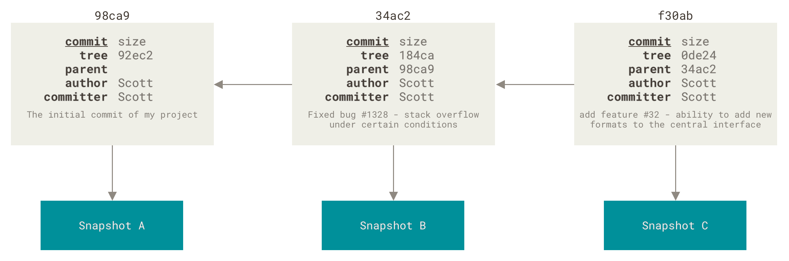
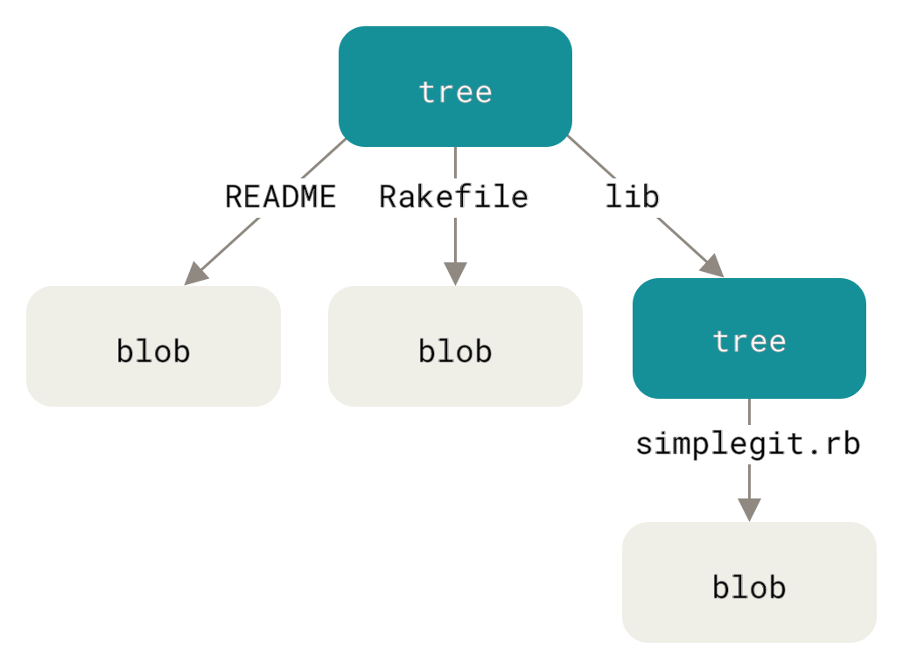

<!DOCTYPE html>
<html xmlns="http://www.w3.org/1999/xhtml" lang="" xml:lang="">
    <head>
        <meta charset="utf-8" />
        <meta name="generator" content="markdown-it" />
        <meta name="viewport" content="width=device-width, initial-scale=1.0, user-scalable=yes" />
        <meta name="author" content="runner" />
        <meta name="dcterms.date" content="2025-04-08 13:38:18.855" />
        <title>Git</title>
        <style type="text/css">
            code {
                white-space: pre-wrap;
            }
            span.smallcaps {
                font-variant: small-caps;
            }
            span.underline {
                text-decoration: underline;
            }
            div.column {
                display: inline-block;
                vertical-align: top;
                width: 50%;
            }
        </style>
        <style type="text/css">
            a.sourceLine {
                display: inline-block;
                line-height: 1.25;
            }
            a.sourceLine {
                pointer-events: none;
                color: inherit;
                text-decoration: inherit;
            }
            a.sourceLine:empty {
                height: 1.2em;
            }
            .sourceCode {
                overflow: visible;
            }
            code.sourceCode {
                white-space: pre;
                position: relative;
            }
            div.sourceCode {
                margin: 1em 0;
            }
            pre.sourceCode {
                margin: 0;
            }
            @media screen {
                div.sourceCode {
                    overflow: auto;
                }
            }
            @media print {
                code.sourceCode {
                    white-space: pre-wrap;
                }
                a.sourceLine {
                    text-indent: -1em;
                    padding-left: 1em;
                }
            }
            pre.numberSource a.sourceLine {
                position: relative;
                left: -4em;
            }
            pre.numberSource a.sourceLine::before {
                content: attr(title);
                position: relative;
                left: -1em;
                text-align: right;
                vertical-align: baseline;
                border: none;
                pointer-events: all;
                display: inline-block;
                -webkit-touch-callout: none;
                -webkit-user-select: none;
                -khtml-user-select: none;
                -moz-user-select: none;
                -ms-user-select: none;
                user-select: none;
                padding: 0 4px;
                width: 4em;
                background-color: #ffffff;
                color: #a0a0a0;
            }
            pre.numberSource {
                margin-left: 3em;
                border-left: 1px solid #a0a0a0;
                padding-left: 4px;
            }
            div.sourceCode {
                color: #1f1c1b;
                background-color: #ffffff;
            }
            @media screen {
                a.sourceLine::before {
                    text-decoration: underline;
                }
            }
            code span {
                color: #1f1c1b;
            } /* Normal */
            code span.al {
                color: #bf0303;
                background-color: #f7e6e6;
                font-weight: bold;
            } /* Alert */
            code span.an {
                color: #ca60ca;
            } /* Annotation */
            code span.at {
                color: #0057ae;
            } /* Attribute */
            code span.bn {
                color: #b08000;
            } /* BaseN */
            code span.bu {
                color: #644a9b;
                font-weight: bold;
            } /* BuiltIn */
            code span.cf {
                color: #1f1c1b;
                font-weight: bold;
            } /* ControlFlow */
            code span.ch {
                color: #924c9d;
            } /* Char */
            code span.cn {
                color: #aa5500;
            } /* Constant */
            code span.co {
                color: #898887;
            } /* Comment */
            code span.cv {
                color: #0095ff;
            } /* CommentVar */
            code span.do {
                color: #607880;
            } /* Documentation */
            code span.dt {
                color: #0057ae;
            } /* DataType */
            code span.dv {
                color: #b08000;
            } /* DecVal */
            code span.er {
                color: #bf0303;
                text-decoration: underline;
            } /* Error */
            code span.ex {
                color: #0095ff;
                font-weight: bold;
            } /* Extension */
            code span.fl {
                color: #b08000;
            } /* Float */
            code span.fu {
                color: #644a9b;
            } /* Function */
            code span.im {
                color: #ff5500;
            } /* Import */
            code span.in {
                color: #b08000;
            } /* Information */
            code span.kw {
                color: #1f1c1b;
                font-weight: bold;
            } /* Keyword */
            code span.op {
                color: #1f1c1b;
            } /* Operator */
            code span.ot {
                color: #006e28;
            } /* Other */
            code span.pp {
                color: #006e28;
            } /* Preprocessor */
            code span.re {
                color: #0057ae;
                background-color: #e0e9f8;
            } /* RegionMarker */
            code span.sc {
                color: #3daee9;
            } /* SpecialChar */
            code span.ss {
                color: #ff5500;
            } /* SpecialString */
            code span.st {
                color: #bf0303;
            } /* String */
            code span.va {
                color: #0057ae;
            } /* Variable */
            code span.vs {
                color: #bf0303;
            } /* VerbatimString */
            code span.wa {
                color: #bf0303;
            } /* Warning */
        </style>
        <!--
  Firefox non carica font da locale quindi il font può non essere visibile
  quando di carica la pagina da locale.
  Bisogna impostare about:config
    security.fileuri.strict_origin_policy = false
  -->
        <link rel="stylesheet" href="../../inc/css/katex.min.css" />
        <link rel="stylesheet" href="../../inc/css/fonts/google_fonts.css" />
        <!-- <link href="https://cdn.jsdelivr.net/npm/bootstrap@5.3.0-alpha1/dist/css/bootstrap.min.css" rel="stylesheet" integrity="sha384-GLhlTQ8iRABdZLl6O3oVMWSktQOp6b7In1Zl3/Jr59b6EGGoI1aFkw7cmDA6j6gD" crossorigin="anonymous"> -->
        <link rel="stylesheet" href="../../inc/css/bootstrap.min.css" />
        <link rel="stylesheet" href="../../inc/css/cdp.css" />
        <!--[if lt IE 9]>
            <script src="//cdnjs.cloudflare.com/ajax/libs/html5shiv/3.7.3/html5shiv-printshiv.min.js"></script>
        <![endif]-->
        <meta name="keywords" content="Appunti,Note" />
        <meta name="description" content="Appunti di runner" />
        <link rel="icon" type="image/x-icon" href="../../inc/img/favicon.ico" />
        <link rel="shortcut icon" type="image/x-icon" href="../../inc/img/favicon.ico" />

        <link rel="stylesheet" href="../../inc/js/hljs/styles/default.css" />
        <script src="../../inc/js/hljs/lib/highlight.js"></script>
        <script src="../../inc/js/bootstrap/bootstrap.bundle.min.js"></script>
        <!-- <script src="https://cdn.jsdelivr.net/npm/bootstrap@5.3.0-alpha1/dist/js/bootstrap.bundle.min.js" integrity="sha384-w76AqPfDkMBDXo30jS1Sgez6pr3x5MlQ1ZAGC+nuZB+EYdgRZgiwxhTBTkF7CXvN" crossorigin="anonymous"></script> -->
        <script>
            hljs.initHighlightingOnLoad();
        </script>
        <script type="module">
            import mermaid from '../../inc/js/mermaid/dist/mermaid.esm.min.mjs';
            // import mermaid from 'https://cdn.jsdelivr.net/npm/mermaid@10/dist/mermaid.esm.min.mjs';
            mermaid.initialize({ startOnLoad: true });
        </script>
    </head>
    <body></body>
</html>
<h1 id="git" tabindex="-1">Git <a class="header-anchor" href="#git" aria-hidden="true">🔗</a></h1>
<p class="code">2025-04-08 13:38:18.855</p>
<nav class="table-of-contents"><ol><li><a href="#riferimenti">Riferimenti </a></li><li><a href="#comandi-utili">Comandi Utili </a></li><li><a href="#init---creare-un-repository-locale">init - creare un repository locale </a></li><li><a href="#download-iniziale-di-un-repository-github">Download iniziale di un repository github </a></li><li><a href="#primo-commit">Primo Commit </a></li><li><a href="#definizioni">Definizioni </a></li></ol></nav><h1 id="git-1" tabindex="-1">git <a class="header-anchor" href="#git-1" aria-hidden="true">🔗</a></h1>
<p><code>SHA-1</code>: Si tratta di una stringa di 40-caratteri, composta da caratteri esadecimali (<code>0-9</code> ed <code>a-f</code>).</p>
<h2 id="riferimenti" tabindex="-1">Riferimenti <a class="header-anchor" href="#riferimenti" aria-hidden="true">🔗</a></h2>
<ul>
<li><a href="https://ndpsoftware.com/git-cheatsheet.html#loc=index;">https://ndpsoftware.com/git-cheatsheet.html#loc=index;</a></li>
<li><a href="https://code.visualstudio.com/docs/sourcecontrol/overview">https://code.visualstudio.com/docs/sourcecontrol/overview</a></li>
</ul>
<p>Pro Git Book:</p>
<ul>
<li><a href="https://github.com/progit/progit2">https://github.com/progit/progit2</a></li>
<li><a href="https://git-scm.com/book/">https://git-scm.com/book/</a></li>
</ul>
<p>Tutorial:</p>
<ul>
<li><a href="https://git-scm.com/docs/giteveryday">https://git-scm.com/docs/giteveryday</a></li>
<li><a href="https://git-scm.com/docs/gittutorial">https://git-scm.com/docs/gittutorial</a></li>
</ul>
<p>Git:</p>
<ul>
<li><a href="https://wiki.archlinux.org/title/git">https://wiki.archlinux.org/title/git</a></li>
<li><a href="https://man.archlinux.org/man/git.1">https://man.archlinux.org/man/git.1</a></li>
<li><a href="https://git-scm.com/docs/git-status#_short_format">https://git-scm.com/docs/git-status#_short_format</a></li>
</ul>
<p>GitHub:</p>
<ul>
<li><a href="https://www.githubstatus.com/">https://www.githubstatus.com/</a></li>
<li>renaming the default branch of our own repositories from <code>master</code> to <strong><code>main</code></strong> <a href="https://github.com/github/renaming">https://github.com/github/renaming</a></li>
</ul>
<h2 id="comandi-utili" tabindex="-1">Comandi Utili <a class="header-anchor" href="#comandi-utili" aria-hidden="true">🔗</a></h2>
<pre><code class="language-bash"><span class="hljs-comment"># Visualizza i commit locali da inviare al repository</span>
$ git <span class="hljs-built_in">log</span> origin/main..HEAD
<span class="hljs-comment"># Oppure anche semplicemente</span>
$ git <span class="hljs-built_in">log</span> origin/main

<span class="hljs-comment"># Amend con riutilizzo dell&#x27;ultimo messaggio di commit</span>
$ git config --global alias.amend <span class="hljs-string">&#x27;commit --amend --no-edit&#x27;</span>

$ git status -s
</code></pre>
<h2 id="init---creare-un-repository-locale" tabindex="-1">init - creare un repository locale <a class="header-anchor" href="#init---creare-un-repository-locale" aria-hidden="true">🔗</a></h2>
<p><a href="https://git-scm.com/book/en/v2/Git-Basics-Getting-a-Git-Repository">https://git-scm.com/book/en/v2/Git-Basics-Getting-a-Git-Repository</a></p>
<pre><code class="language-bash">$ <span class="hljs-built_in">cd</span> (project-directory)
$ git init
$ (add some files to the index)
$ git add .
$ git commit -m <span class="hljs-string">&#x27;Initial commit&#x27;</span>
</code></pre>
<h2 id="download-iniziale-di-un-repository-github" tabindex="-1">Download iniziale di un repository github <a class="header-anchor" href="#download-iniziale-di-un-repository-github" aria-hidden="true">🔗</a></h2>
<pre><code class="language-bash">$ git <span class="hljs-built_in">clone</span> git@github.com:cdipiet/JS_Notes.git
</code></pre>
<h2 id="primo-commit" tabindex="-1">Primo Commit <a class="header-anchor" href="#primo-commit" aria-hidden="true">🔗</a></h2>
<p><a href="https://git-scm.com/book/en/v2/Git-Basics-Getting-a-Git-Repository">https://git-scm.com/book/en/v2/Git-Basics-Getting-a-Git-Repository</a></p>
<pre><code class="language-bash">$ <span class="hljs-built_in">cd</span> (project-directory)
$ (add/modify some files to the index)
$ git add .

$ git <span class="hljs-built_in">rm</span> PROJECTS.md
$ git <span class="hljs-built_in">rm</span> -f PROJECTS.md
<span class="hljs-comment"># If you modified the file or had already added it to the staging area, you must force the removal with the -f option</span>

$ git <span class="hljs-built_in">rm</span> --cached README
<span class="hljs-comment"># to keep the file in your working tree but remove it from your staging area</span>

$ git <span class="hljs-built_in">mv</span> README.md README
<span class="hljs-comment"># $ mv README.md README</span>
<span class="hljs-comment"># $ git rm README.md</span>
<span class="hljs-comment"># $ git add README</span>

$ git commit -a -m <span class="hljs-string">&#x27;Second commit&#x27;</span>
</code></pre>
<h2 id="definizioni" tabindex="-1">Definizioni <a class="header-anchor" href="#definizioni" aria-hidden="true">🔗</a></h2>
<p>Working Directory/Working Tree/Workspace</p>
<p><a href="https://git-scm.com/docs/gitglossary#Documentation/gitglossary.txt-aiddefworkingtreeaworkingtree">https://git-scm.com/docs/gitglossary#Documentation/gitglossary.txt-aiddefworkingtreeaworkingtree</a></p>
<p>tree-ish</p>
<ul>
<li><a href="https://git-scm.com/docs/gitglossary#Documentation/gitglossary.txt-aiddeftree-ishatree-ishalsotreeish">https://git-scm.com/docs/gitglossary#Documentation/gitglossary.txt-aiddeftree-ishatree-ishalsotreeish</a></li>
<li><a href="https://stackoverflow.com/questions/4044368/what-does-tree-ish-mean-in-git">https://stackoverflow.com/questions/4044368/what-does-tree-ish-mean-in-git</a></li>
</ul>
<p>Staging Area/Index</p>
<ul>
<li><a href="https://git-scm.com/docs/gitglossary#Documentation/gitglossary.txt-aiddefindexaindex">https://git-scm.com/docs/gitglossary#Documentation/gitglossary.txt-aiddefindexaindex</a></li>
<li><a href="https://git-scm.com/docs/index-format">https://git-scm.com/docs/index-format</a></li>
<li><a href="https://stackoverflow.com/questions/4084921/what-does-the-git-index-contain-exactly">https://stackoverflow.com/questions/4084921/what-does-the-git-index-contain-exactly</a></li>
</ul>
<p>Repository/.git Directory</p>
<p><a href="https://git-scm.com/docs/gitglossary#Documentation/gitglossary.txt-aiddefrepositoryarepository">https://git-scm.com/docs/gitglossary#Documentation/gitglossary.txt-aiddefrepositoryarepository</a></p>
<p></p>
<p></p>
<p>
</p>
<p></p>
<p></p>
<p></p>
<p>


</p>
</body></html>